01 Задача
Issue #1 формулирует эксперимент так: повторить инфляционное расширение пространства, стартовав с «зародыша» из ограниченного числа бит; автомат живёт в кубической решётке; узлы решётки образуют пространство; куб расширяется одинаково во все стороны, добавляя слои, быстрее скорости света; один такт автомата задаёт скорость света; при выходе на континуум пространство замыкается периодически. Итог — 3D-анимация на разных масштабах с сеткой и палитрой Inferno по плотности информации, а результаты — в HTML.
Отдельно оговорено: не надо строить модель барионной материи; цель — перебрать правила клеточных автоматов и оценить богатство структур. В ходе работы формулировка была уточнена: не якорься на 3D-«Жизни», придумай свои правила и выясни, сколько правил вообще может быть.
Отсюда четыре задачи, которым подчинена структура отчёта:
- Формализовать решётку, биты, такт, скорость света и инфляцию — так, чтобы все требования issue #1 были явно выполнимы или явно нарушаемы.
- Посчитать пространство правил при разных уровнях описания и понять, какая его доля вообще обозрима.
- Придумать свои правила из примитивов модели и провести честный перебор там, где он возможен.
- Измерить богатство структур и собрать воспроизводимые визуализации в HTML.
02 Модель
2.1 Решётка, биты, такт, скорость света
Пространство — куб L×L×L ячеек; ячейка хранит B-битное слово s ∈ {0..2B−1} (в основных прогонах B = 8, то есть 256 состояний). Время дискретно: такт CLK обновляет все ячейки одновременно по локальному правилу, зависящему от 27-ячеечного окружения (сама ячейка + 26 соседей Мура).
Скорость света — это максимальная скорость распространения сигнала за такт. Для 6-соседней (фон-Неймановской) связности c = 1 ячейка/такт в евклидовой метрике; для 26-соседней — cmax = √3, потому что диагональный шаг длиннее. Это различие принципиально и всюду ниже указано явно: правило с окружением Мура не может быть «ровно c = 1» в евклидовой метрике.
Правило локально: за один такт ячейка видит только соседей, поэтому фронт структуры не может обогнать cmax·t. Это проверяется численно для всех прогонов (раздел 6.4).
2.2 Инфляция и замыкание
Куб растёт симметрично: радиус R(t) увеличивается, сторона L(t) = 2R(t)+1. Новые слои рождаются пустыми (нулевыми) — информация не создаётся, она только разбавляется объёмом. Пока t < tend, граница — вакуум («стенка»); после tend границы замыкаются периодически (тор).
Мы используем пять законов роста; четыре быстрых достигают Lmax за время наблюдения, пятый — медленный контроль, в котором фронт успевает дойти до стенки:
| Закон | tend | v(0) | Lfinal | занятость | состояние = exp |
|---|---|---|---|---|---|
exp | 39.7 | 5.99c | 97 | 0.0055 | — |
power | 4.5 | 103.54c | 97 | 0.0055 | да |
linear | 9.0 | 5.00c | 97 | 0.0055 | да |
step | 0.0 | 0.00c | 97 | 0.0055 | да |
linear_slow | 180.0 | 0.25c | 71 | 0.0200 | нет |
Ключевое условие «инфляция быстрее света»: dR/dt > c в начале. Для экспоненциального закона R(t) = Rmax(1−e−t/τ) начальная скорость равна Rmax/τ; для степенного R ∝ tp при p < 1 производная в нуле формально бесконечна (в дискретном виде — огромный первый скачок). Это не косметика: именно сверхсветовой старт не даёт фронту структуры упереться в стенку, пока идёт инфляция.
Второе условие — «стенка не догоняет свет»: R(t) > c·t на всём интервале инфляции. Если оно выполнено, внутренний наблюдатель не может отличить один закон инфляции от другого: локальная динамика зависит только от объёма, а не от истории его роста. Это проверяется в разделе 6.4.
2.3 Что считать информацией
У гипотезы «масса ~ энергия ~ информация» нет одного формального определения информации, поэтому мы измеряем три разных величины и не смешиваем их:
- Биты состояния
P = Σ popcount(s(x))— «сколько единиц». Для бинарных правил это число живых клеток; для B-битных — число единичных бит во всех словах. Сохраняется не всеми правилами. - Обратимость — существует ли обратное правило (биекция на пространстве конфигураций). Обратимое правило сохраняет объём фазового пространства, даже если
Pменяется. - Энтропия Шеннона распределения состояний
H = −Σ pk log2 pk— разнообразие, а не количество.
Правило TOPPLE сохраняет P точно (это проверка). TWIN обратимо по построению, но P не сохраняет. SPROUT и HELIX не сохраняют ни то, ни другое — это «ростовые» правила, и в отчёте они честно помечены как нарушающие постулат сохранения.
03 Сколько бывает правил
3.1 Конечное, но астрономическое число
Правило с S состояниями и окружением из N ячеек — это таблица, которая каждому из SN входов сопоставляет одно из S состояний. Число таких таблиц:
Для бинарной решётки с 27-ячеечным окружением это 2227 = 2134 217 728 — число с 40 403 563 десятичными цифрами. Для B = 8 (256 состояний) показатель становится 8·2216, то есть число имеет порядка 2.5·1065 цифр. Это не «много», это заведомо больше, чем можно перебрать при любых мыслимых ресурсах.
| Уровень описания | Число правил | Комментарий |
|---|---|---|
| Общее бинарное правило, 27 ячеек (центр + 26 соседей) | 2227 ≈ 1040 403 562 | 40 403 563 десятичных цифр |
| Инвариантное относительно 48 вращений/отражений куба | 22 852 288 ≈ 10858 624.2 | правило одинаково на каждой орбите конфигураций |
| Инвариантное относительно 24 собственных вращений | 25 605 504 ≈ 101 687 425 | более слабая симметрия → больше правил |
| Классы эквивалентности правил (48) | ≈ 1040 403 560 | лемма Бёрнсайда по таблицам; фактор всего 48 |
| B/S-правила 3D-Жизни (26 соседей) | 254 = 18 014 398 509 481 984 | B и S — независимые подмножества {0..26} |
| Одноуровневое тоталистическое f(k) | 227 = 134 217 728 | зависит только от числа соседей |
| Интервальные правила (a,b/c,d) | 142 884 | класс, в котором Bays искал 3D-Жизнь |
| B = 8 бит, 27 ячеек | 25625627 = 28·2216 | ≈ 102.5·1065 — число цифр не помещается в память |
| B = 8 бит, 6 соседей + центр | 28·256 | ≈ 101.7·1017 |
| Бинарное, 6 соседей + центр | 2128 = 340 282 366 920 938 463 463 374 607 431 768 211 456 | строгая причинность c = 1 |
| Обратимые блочные (Марголус), блок 2×2×2 | 256! ≈ 10506.9 | биекции 256 состояний блока |
| Линейные бинарные правила, 27 коэффициентов | 227 = 134 217 728 | из них обратимы на бесконечной решётке только 27 сдвигов |
3.2 Симметрия: два разных вопроса
«Сколько правил» — вопрос с двумя разными ответами, и их легко перепутать.
(а) Сколько правил инвариантно относительно симметрии куба? Правило, не меняющееся при поворотах, обязано быть одинаковым на каждой орбите конфигураций. Число орбит 27-ячеечных конфигураций: 2 852 288 для полной группы из 48 вращений и отражений и 5 605 504 для 24 собственных вращений. Значит, симметричных бинарных правил 22 852 288 ≈ 10858 624 (для 48) или 25 605 504 ≈ 101 687 425 (для 24). Это на 39 с половиной миллионов порядков меньше полного числа 1040 403 562 — симметрия действительно режет пространство, хотя результат всё равно астрономичен.
(б) Сколько классов эквивалентности правил? Если считать правила с точностью до поворота, работает лемма Бёрнсайда по таблицам:
где c(g) — число циклов перестановки 27 ячеек. Здесь почти всё определяется тождественным элементом (c = 27), поэтому ответ ≈ 1040 403 560.4 — всего в 48 раз меньше, чем без факторизации. Иными словами: симметричных правил очень мало, но почти все правила несимметричны, поэтому факторизация по симметрии почти ничего не экономит.
Для B/S-правил оба вопроса вырождаются: они зависят только от числа соседей и потому симметричны автоматически. Симметрия не уменьшает 254 — это число уже и есть число B/S-правил.
3.3 Что об этом известно в литературе
Сам подсчёт — элементарная комбинаторика, он не требует исследования. Исследованным является другое — классификация поведения, и только для крошечных пространств:
- элементарные одномерные автоматы: 256 правил, полный перебор и классификация (Вольфрам, 1983; «A New Kind of Science», 2002);
- двумерные Life-подобные правила:
29·29 = 218 = 262 144— пространство, которое ещё можно systematic-перебрать; - 3D тоталистические B/S:
254— уже за пределами полного перебора поведения; известны отдельные семейства и «глайдеры» (Bays, 1987): B5/S45, B6/S567, B5/S56, B5/S678 — но не карта всех поведений; - общее 3D-пространство
2227не перебрано и не будет перебрано; более того, по Вольфраму поведение правил вычислительно неприводимо — его нельзя предсказать, не прогнав.
Иными словами: на вопрос «сколько правил» ответ точный и конечный, а на вопрос «что они делают» — нет. Поэтому дальше мы фиксируем язык описания (грамматику) и перебираем не всё, а осмысленный срез.
Любопытная деталь: канонические правила Bays (B5/S45, B6/S567) требуют для рождения 5–6 соседей, поэтому из одной клетки не растут вовсе — им нужен зародыш из нескольких клеток. Это тот же эффект, который мы измеряем в разделе 6.1.
Отдельно стоит сказать о постановке issue #1. Работ по клеточному автомату именно на космологически расширяющейся решётке мы не нашли: ближайшие известные формализмы — структурно-динамические КА (Ilachinski & Halpern, 1987), где меняется сама топология решётки, и «расширяющиеся» КА (Modanese, 2020), где новые клетки вставляются между старыми, но это не космология. То есть эксперимент с инфляционным кубом — не воспроизведение известной модели, а самостоятельная постановка.
3.4 Наша грамматика и её размер
Правило строится из примитивов: B-битное слово, побитовые операции (AND, OR, XOR, NOT), поворот/сдвиг битов, пространственный сдвиг по одному из шести направлений, порог/деление, сохранение. Один из языков такого вида:
| Семейство | Параметры | Возможных | Проверено |
|---|---|---|---|
| SPROUT | 3 направления (упоряд.), операция, поворот | 6·5·4 · 3 · 2 = 720 | 720 (все) |
| SPROUT-sym | все 6 направлений, парные AND | до 26 масок | 3 |
| HELIX | каноническая хиральная формула | 1 | 1 |
| TOPPLE | порог k и подмножество 6 соседей | 25 · 26 = 1600 | 1 |
| CYCLIC | S = 3..8, 6 или 26 соседей | 12 | 1 |
| TWIN | базовое правило F | столько же, сколько F | 1 |
| 3D-Жизнь B/S | B, S ⊂ {0..26} | 254 | 729 (B={b}, S={s}) |
Из этого языка мы берем четыре семейства и перебираем:
- SPROUT — все 720 вариантов трёх направлений (упорядоченная тройка из 6), трёх операций и двух поворотов; перебраны все;
- 3D-Жизнь B/S — контроль: 729 одноуровневых правил (B = {b}, S = {s}) из
254; перебраны все 729; - HELIX, TOPPLE, TWIN — по одному каноническому представителю, глубокие прогоны.
Итого в двух свипах проверено 1 449 правил, ещё шесть представителей прогнаны глубоко (раздел 6.3). Это всё ещё исчезающе малая доля полного пространства — и это честный результат, а не недостаток реализации.
04 Наши правила
Все правила ниже — локальные, синхронные и используют B-битное слово как объект, а не только как «жив/мёртв». Сначала — описание словами, без формул; затем — точные формулы и параметры.
4.1 Словами: что делает клетка за один такт
SPROUT («побег»). В каждой клетке лежит байт — восемь бит, то есть восемь «слоёв» информации. За такт клетка делает четыре действия. Во-первых, мысленно поворачивает свой байт на один бит — как будто перелистывает страницы. Во-вторых, смотрит на байт соседа в одном выбранном направлении и оставляет от него только те биты, которые стоят на тех же местах, что и у неё (побитовое «и»). В-третьих, берёт байты ещё двух соседей в двух других направлениях. В-четвёртых, складывает всё это по модулю два — то есть бит становится единицей, если единиц было нечётное число. Результат записывается в клетку на следующем такте. Клетка «жива», если в её байте есть хотя бы одна единица; яркость на картинке — сколько единиц. Рост получается потому, что клетка копирует собственный байт в соседа самим сдвигом, не спрашивая разрешения у числа соседей. А «и» с соседом делает правило нелинейным: две единицы в одном разряде дают единицу, а не ноль, поэтому структура ветвится, а не просто расплывается. Правило растёт только в трёх выбранных направлениях — отсюда его пластинчатая, анизотропная форма.
HELIX («винт»). Тот же байт и те же сдвиги, но без «и»: клетка поворачивает свой байт, складывает его с байтом соседа по одной оси и с повёрнутым в другую сторону байтом соседа по другой оси. Это линейное правило: если сложить две картины, получится ровно та же картина, как от суммы. Поэтому волны не взаимодействуют, а интерферируют: там, где гребни совпали, биты гасят друг друга, там, где не совпали, — усиливаются. Из плотного зародыша расходится система волн; после замыкания куба в тор волны обходят его и встречаются сами с собой, образуя стоячие решётки и треугольные «лепестки».
TOPPLE («песочница»). В клетке лежит целое число — сколько в ней бит-зёрен. Если зёрен шесть или больше, клетка отдаёт по одному зерну каждому из шести соседей, а у себя оставляет остаток от деления на шесть. Если меньше — ничего не делает. Сумма зёрен по всей вселенной при этом не меняется: сколько было, столько и осталось. Из одной клетки с N зёрнами получается растущая куча: зёрна пересыпаются наружу, пока во всех клетках не станет меньше шести. Дальше структура застывает — сохранение не оставляет ей свободы меняться.
TWIN («двойник»). Это не самостоятельное правило, а надстройка над любым другим. Клетка смотрит, что сделало бы базовое правило (например, SPROUT) за такт, и складывает результат по модулю два с тем, что было в ней два такта назад. Поэтому прошлое можно восстановить: зная два последовательных состояния, вы прокручиваете правило назад и получаете предыдущее. Информация не теряется, хотя число единиц может меняться. Внешне это похоже на SPROUT, но картина «дрожит» симметрично во времени: у неё нет ни затухания, ни аттрактора.
CYCLIC («циклический»). У клетки есть фаза 0, 1, 2 или 3. За такт фаза увеличивается на единицу (по кругу), если хотя бы у одного из шести соседей фаза уже на единицу больше. Получается волна фаз, бегущая по решётке; в трёх измерениях она быстро дробится на домены и превращается в фазовую турбулентность. Это эталон «много активности, мало структуры»: почти все клетки всё время меняются, но устойчивых объектов нет.
LIFE (контроль). Клетка просто жива или мертва. За такт она считает, сколько из 26 соседей живы. Мёртвая рождается, если число попало в список B; живая выживает, если число попало в список S. Это классическая 3D-«Жизнь»; мы используем её только как контроль в разделе 6.1, чтобы показать, чего не может точечный зародыш.
4.2 Формулы и параметры
Побег
Внутренний поворот битов работает как часы, AND даёт нелинейность, сдвиги связывают ячейку с соседями. Растёт даже из одной клетки: слово само сдвигается в соседа, не дожидаясь «счёта соседей».
⊕ s<<d1 ⊕ s<<d2
Винт
Линейное над GF(2) правило: биты вращаются при переносе по осям. Работает суперпозиция, поэтому интерференция волн даёт решётки и стоячие картины. Хиральное: направления +x, −y, +z входят с разными поворотами.
⊕ ROT7(s<<−y) ⊕ s<<+z
Песочница
Параллельная версия абелевой песочницы: клетка с q = s div 6 отдаёт по q каждому из шести соседей. Сумма бит сохраняется точно. Зародыш — одна клетка, несущая N бит.
s' = s − 6q + Σ6 соседей qn
Двойник
Надстройка второго порядка над любым правилом F: s(t+1) = F(s(t)) ⊕ s(t−1). Пара двух последовательных состояний однозначно восстанавливает и прошлое, и будущее — информация не теряется, хотя число единиц может меняться.
Циклический КА
Семейство Гринберга–Хастингса: фаза j сдвигается в j+1, если рядом есть сосед в фазе j+1. Не наше изобретение, но нужно как эталон «фазовой турбулентности» — состояния, в котором много всего происходит, но структур мало.
3D-Жизнь B/S
Тоталистическое правило: рождение при n ∈ B, выживание при n ∈ S, где n — число живых соседей из 26. Используется только в разделе 6.1, чтобы показать, чего не может точечный зародыш.
05 Методика
Протокол глубокого прогона (открытый режим). Lmax = 321, T = 64 тактов, экспоненциальная инфляция с v0 = 40c и tend ≈ 21: куб успевает вырасти почти до Lmax, после чего фронт распространяется в статичном большом пространстве. К T = 64 радиус фронта равен 64, радиус куба — 160: пространство в 2.5 раза больше причинно связанной области — близко к космологическому отношению 40:13 ≈ 3. Фронт не доходит до стенки. Зародыш 3×3×3 (для TOPPLE — одна клетка с 30 000 бит, для CYCLIC — случайные фазы в 3×3×3, для HELIX — случайный блок 5×5×5). Кадры — в моменты 0, 2, 4, 8, 12, 16, 24, 32, 40, 48, 56, 64.
Метрики (все — по активному кубу L(t)):
- занятость — доля ненулевых ячеек;
- энтропия
H/log2S— разнообразие состояний; - сжимаемость
len(zlib)/len(raw)— 1 у шума, ≈0 у порядка; - кластеры — компоненты 6-связности (число, максимальный, средний размер);
- box-размерность — наклон log N(s) от log(1/s) при масштабах s = 2, 4, 8, …;
- активность — средняя доля изменившихся за такт ячеек по последним 16 тактам;
- радиус фронта — максимальное расстояние занятой ячейки от центра.
Для ранжирования используется эвристический индекс богатства:
+ 0.12·(3−D)/1.5 + 0.10·min(A/0.02, 1),
со штрафами за туман (occ > 0.6) и заморозку (A < 10−5). Это не физическая величина, а способ упорядочить таблицу; в отчёте рядом с индексом всегда приведены сырые метрики.
Свип. SPROUT: 720 правил, L = 65, T = 96, экспоненциальная инфляция; для каждого — метрики в конце. 3D-Жизнь: 729 правил, L = 33, T = 40, точечный зародыш; классификация исхода.
06 Результаты
6.1 Зародыш 1×1×1: что делает одна клетка
Сначала — контрольный вопрос issue #1: можно ли вообще стартовать с одной клетки, несущей N бит? Для тоталистических правил ответ оказывается жёстким. Если 0 ∉ B и 1 ∉ B, то первая же реплика либо убивает клетку (если 0 ∉ S), либо оставляет её одну (если 0 ∈ S) — пространственной динамики нет. Если 0 ∈ B, вспыхивает весь вакуум. Если 1 ∈ B, за первый такт рождается оболочка из 26 клеток — и дальше эволюция идёт уже не из точки, а из этой оболочки.
| Исход | Правил | Что происходит |
|---|---|---|
| игниция вакуума (B=0) | 27 | вспыхивает весь вакуум: все пустые клетки рождаются |
| оболочка 26 клеток (B=1) | 27 | первый такт рождает 26 соседей точки; далее — рост/застывание |
| одна застывшая клетка (B≥2, S=0) | 25 | клетка выживает с нулём соседей и больше ничего не происходит |
| смерть (остальные) | 650 | нет ни рождения при 1 соседе, ни выживания при 0 |
| всего | 729 | B = {b}, S = {s}, b,s ∈ 0..26 |
Полный перебор 729 одноуровневых правил B/S подтверждает эту классификацию: 650 правил убивают зародыш, 25 оставляют одну застывшую клетку, 27 дают рост (все — через оболочку B=1), 27 — игницию вакуума (B=0). Ни одно из 729 правил не даёт из точки сложной локализованной структуры: максимум — плотный кристалл или туман.
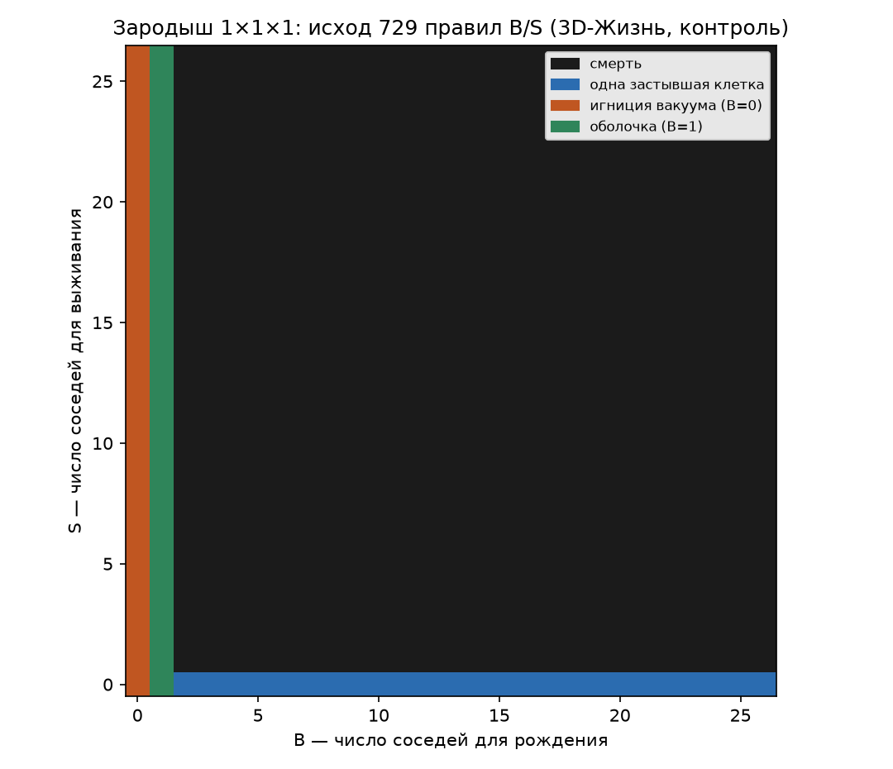
Отсюда важный вывод для гипотезы: «плотная информация в одной клетке» сама по себе бесполезна, если правило смотрит только на счёт соседей. Чтобы N бит в одной клетке что-то значили, правило должно уметь читать и преобразовывать внутренние биты — тогда слово может «выстрелить» в соседей. Именно так устроены SPROUT и HELIX: они растут из одной клетки, потому что сдвиг применяется к самому слову, а не к числу живых соседей.
6.2 Свип 720 SPROUT: где живёт структура
Все 720 вариантов грамматики (упорядоченная тройка направлений, операция, поворот) прогнаны в одинаковом режиме. Распределение занятости бимодальное: большинство правил либо почти пусты, либо заполняют куб; интересная зона — между 10−3 и 3·10−2. Операция OR почти всегда насыщает поле, AND и XOR дают разреженные ветвящиеся структуры. С точностью до плотности и индекса все 720 вариантов распадаются на 9 различных режимов: сказываются симметрии куба и насыщение.
| # | Представитель | занятость | богатство | активность | D | кластеров | вариаций | класс |
|---|---|---|---|---|---|---|---|---|
| 1 | sprout-or-035-r1 | 0.0213 | 0.67 | 0.0284 | 1.68 | 882 | 96 | фрактальное |
| 2 | sprout-or-501-r1 | 0.0225 | 0.66 | 0.0226 | 1.78 | 325 | 48 | фрактальное |
| 3 | sprout-or-504-r1 | 0.0230 | 0.66 | 0.0228 | 1.78 | 300 | 96 | фрактальное |
| 4 | sprout-and-024-r1 | 0.0097 | 0.64 | 0.0125 | 1.52 | 322 | 60 | фрактальное |
| 5 | sprout-and-305-r1 | 0.0097 | 0.63 | 0.0125 | 1.61 | 322 | 36 | фрактальное |
| 6 | sprout-and-405-r1 | 0.0136 | 0.63 | 0.0133 | 1.56 | 224 | 96 | фрактальное |
| 7 | sprout-and-245-r1 | 0.0008 | 0.50 | 0.0009 | 0.67 | 25 | 48 | фрактальное |
| 8 | sprout-xor-035-r1 | 0.0004 | 0.48 | 0.0036 | 0.28 | 9 | 96 | фрактальное |
| 9 | sprout-xor-235-r1 | 0.0003 | 0.47 | 0.0039 | 0.25 | 7 | 144 | фрактальное |
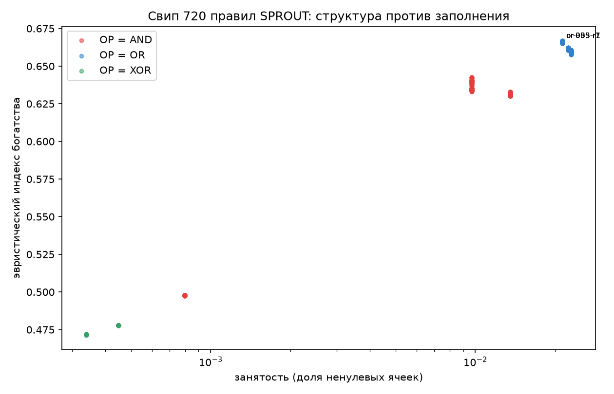
Максимум индекса дают OR-варианты при занятости около 2% и числе кластеров в сотни; AND/XOR держатся в области десятых долей процента. Многие строки — пространственные перестановки одной и той же структуры (поворот куба), поэтому таблица прорежена по плотности и богатству. Общая картина согласуется с интуицией «структура = иерархия масштабов», а не «много пикселей».
6.3 Глубокие прогоны
Шесть представителей прогнаны до T = 64 в кубе 3213 (открытый режим: фронт не достигает стенки). Таблица — финальные метрики, посчитанные по причинному кубу (область внутри фронта, сторона 2c·t+1), а не по всему объёму: иначе разреженность большой пустой вселенной замаскировала бы структуру. Временные ряды — на рисунке ниже.
| Правило | занятость | H/Hmax | сжатие | D | кластеров | активность | биты | богатство | класс |
|---|---|---|---|---|---|---|---|---|---|
helixлинейное хиральное | 0.0001 | 0.000 | 0.001 | 0.36 | 22 | 0.0005 | 833 | 0.49 | фрактальное |
sproutнелинейный рост | 0.0006 | 0.001 | 0.001 | 1.69 | 155 | 0.0001 | 10 888 | 0.54 | фрактальное |
sprout_orрост через OR | 0.0013 | 0.002 | 0.003 | 1.70 | 493 | 0.0001 | 22 648 | 0.56 | фрактальное |
toppleконсервативная песочница | 0.0021 | 0.002 | 0.002 | 1.73 | 2 | 0.0001 | 30 000 | 0.40 | фрактальное |
cyclic4циклический КА (эталон) | 0.1307 | 0.383 | 0.014 | 2.49 | 16 | 0.0082 | 387 465 | 0.56 | фрактальное |
twinобратимое 2-го порядка | 0.0015 | 0.002 | 0.002 | 1.85 | 85 | 0.0001 | 27 216 | 0.51 | фрактальное |
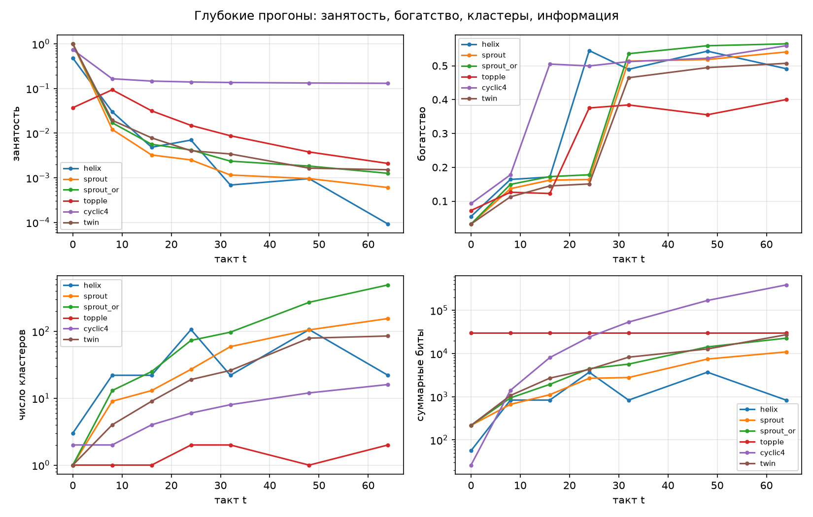
HELIX — линейное правило. В открытом режиме волны расходятся и интерферируют, давая разреженную картину; плотная решётка возникает только после замыкания куба (раздел 6.3.1). Это самый «красивый» результат, но он же и самый хрупкий: при другом времени замыкания картина может почти погаснуть.
SPROUT — нелинейный рост: ветви, грани, дендриты. Число бит растёт, то есть постулат сохранения информации нарушается; это цена роста.
SPROUT-OR — вариант с OR: плотнее и быстрее, но структура грубее; хороший пример «насыщения».
TOPPLE — точное сохранение: 30 000 бит на входе и 30 000 на выходе. Песочница быстро собирается в компактную кучу и застывает; разнообразие низкое. Сохранение оплачено бедностью структур.
CYCLIC4 — фазовая волна заполняет причинный конус: занятость внутри фронта 13%, энтропия максимальна, но это «туман», а не структура. Хороший эталон того, как активность без иерархии выглядит в метриках.
TWIN — обратимое второго порядка: похоже на SPROUT, но время-симметрично; число бит меняется, зато обратный ход существует.
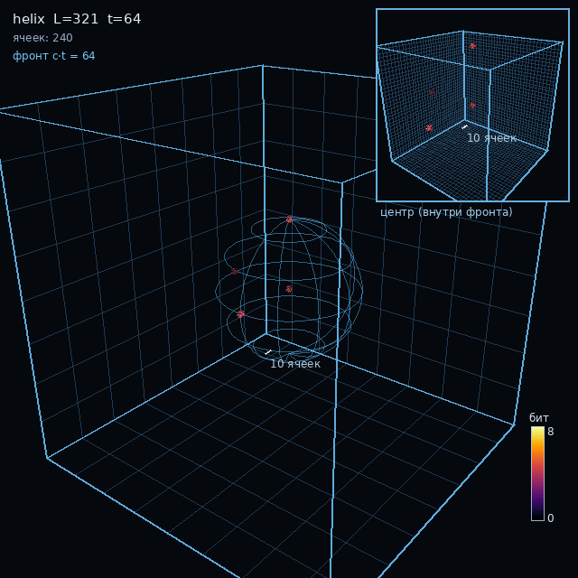


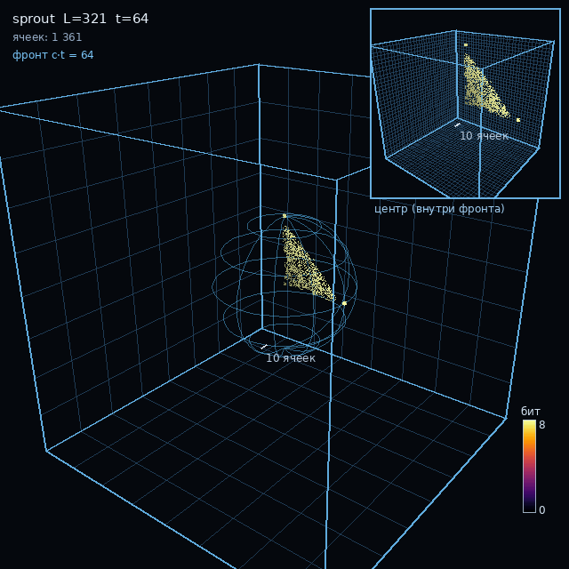


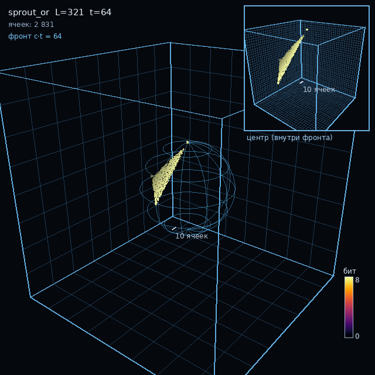


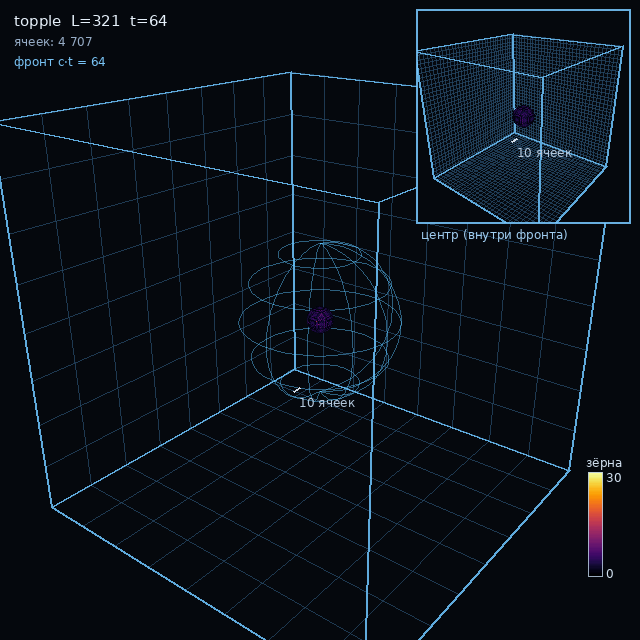


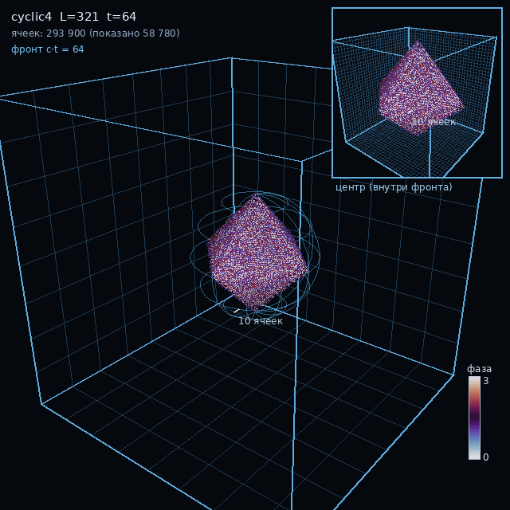


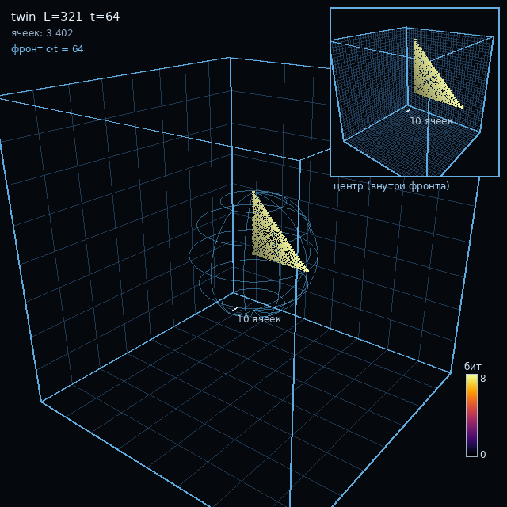


6.3.1 Открытый и закрытый режимы: откуда взялась красивая решётка
Важно различать два режима. В открытом кубе (321³, 64 такта) фронт скорости света не доходит до стенки: автомат развивается в причинно связанном центральном шаре, а вокруг остаётся большое пустое пространство — именно это и показано на кадрах. В закрытом контрольном кубе (97³, 160 тактов, v0 = 4c) фронт доходит до стенки примерно на 48-м такте, а на 60-м куб замыкается в тор; после этого волны HELIX начинают интерферировать сами с собой. Плотная светящаяся решётка, которая так хорошо смотрелась в первых версиях, — это эффект замыкания, а не свободной эволюции: в открытом режиме та же структура гораздо разреженнее.
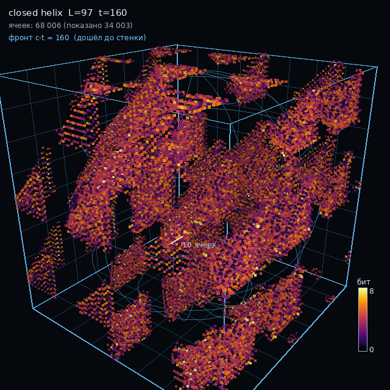
6.4 Инфляция: закон, который нельзя увидеть изнутри
Пять законов с одинаковым Lmax = 97 и одинаковым зародышем дают разные траектории L(t). Четыре быстрых закона (exp, power, linear, step) приводят к побайтово одинаковому состоянию в момент T = 128 — это видно по совпадению CRC32 в таблице. Медленный linear_slow, где куб растёт со скоростью 0.25c и фронт упирается в стенку, даёт другое состояние. Локальное правило не знает, как быстро рос куб, — оно видит только соседей; различие появляется лишь тогда, когда стенка оказывается в причинной достижимости.
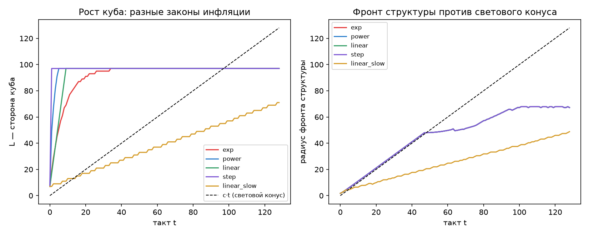
Это миниатюрная версия космологической проблемы горизонта: наблюдатель внутри инфляционного пузыря видит одно и то же при разных законах расширения, если пузырь рос быстрее света. Проверить это можно по хешам состояний: для быстрых законов они совпадают, для медленных — расходятся. Практический вывод для модели: закон инфляции — не «гиперпараметр автомата», а свойство внешнего наблюдателя; на структуры влияет только момент замыкания и то, успел ли фронт дойти до стенки.
6.5 Причинность и визуализации
Радиус фронта во всех прогонах не превышает cmax·t. В глубоком наборе все правила 6-соседние, поэтому наклон ≤ 1; для 26-соседнего контроля (раздел 6.1) теоретический предел был бы √3. Нарушений не найдено.
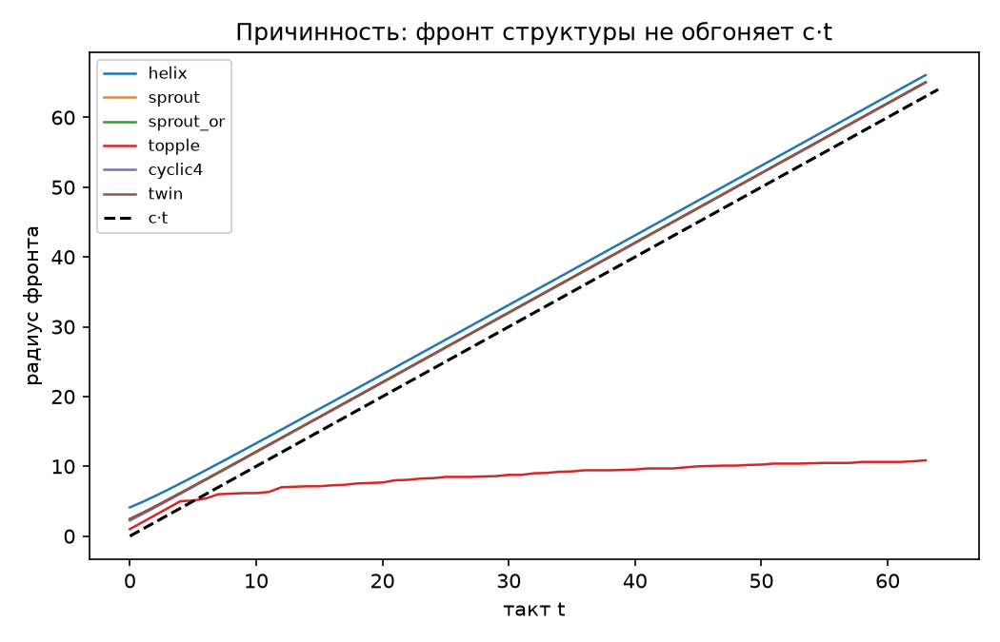
Как читать картинки. Куб — это весь текущий объём пространства L(t), а не вырезка: в центре развивается автомат, а стенки куба — его границы. Каждая светящаяся точка — одна ячейка; промежутки — межузловые интервалы; голубая сетка на стенках — координатная сетка; цвет — плотность информации (число единичных бит, палитра Inferno); белая линейка внизу — 10 ячеек. Голубая каркасная сфера — фронт скорости света r = c·t: он расходится из центра и показывает, какие области уже причинно связаны с зародышем. Когда сфера касается стенок, всё пространство причинно связано — на подписи появляется «дошёл до стенки». Для CYCLIC4 цвет — фаза (палитра Twilight), а не плотность бит.
В правом нижнем углу каждого кадра есть такая же шкала с подписью «бит», «фаза» или «зёрна»; внизу — масштабная линейка 10 ячеек; в правом верхнем — увеличенный центр (область внутри фронта), чтобы структуру было видно при большом объёме пространства.
Ещё одно важное наблюдение: SPROUT анизотропен — он растёт только в трёх выбранных направлениях, поэтому его структура на кадрах выглядит как пересекающиеся пластины. Это свойство правила, а не артефакт проекции. HELIX и TOPPLE изотропнее, и на их примере объёмность видна лучше всего.
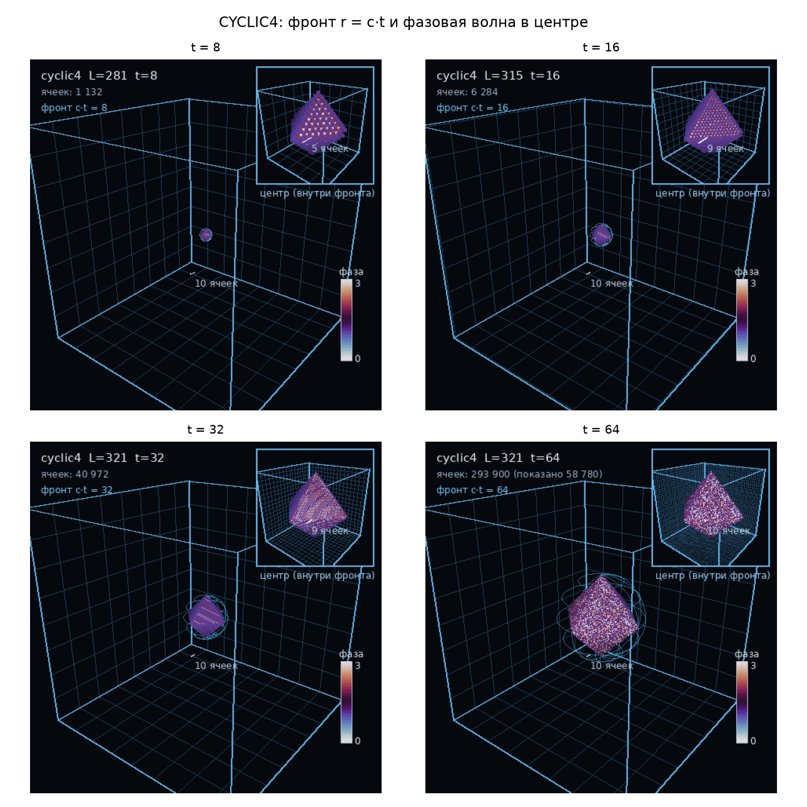
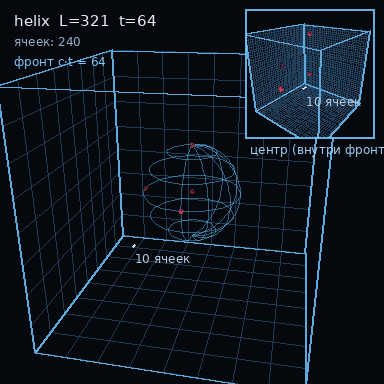
Отдельно — «микроскоп»: вырезанный блок 24×24×24 ячейки, в котором каждый кубик нарисован отдельно. Здесь уже не может быть иллюзии плоскости: видны отдельные ячейки, зазоры решётки и то, как структура заполняет объём.
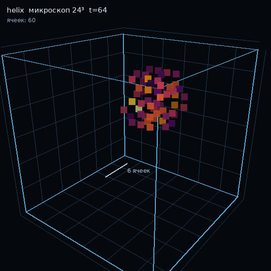
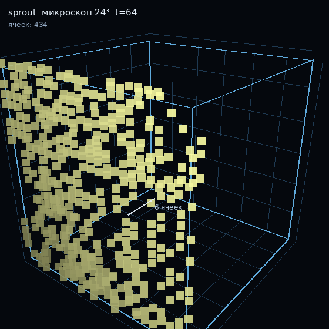
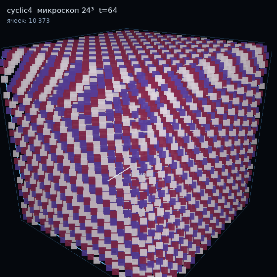
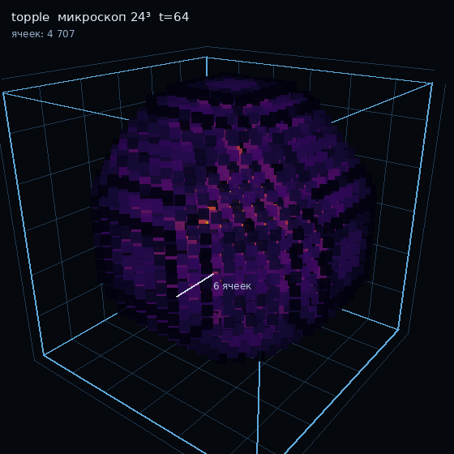
Ниже — интерактивные кадры: ползунок ведёт по тактам, куб растёт от зародыша к Lmax, затем структура эволюционирует внутри замкнутого тора.
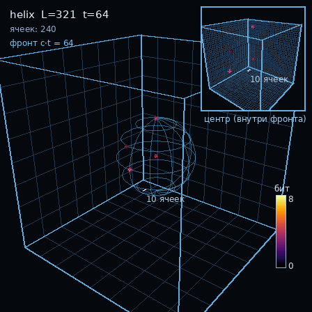
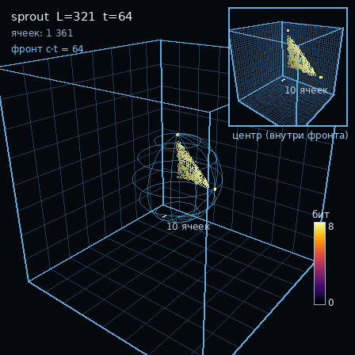
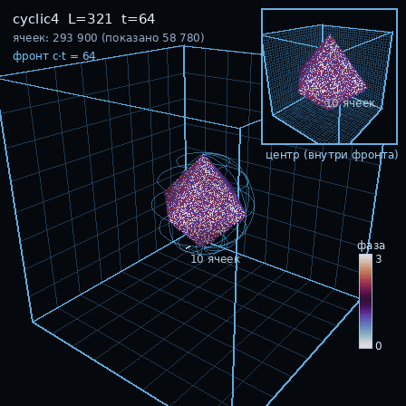
Дополнительно: GIF-анимации (в папке results/ca3d/), мозаики срезов и серии масштабов — на карточках ниже.
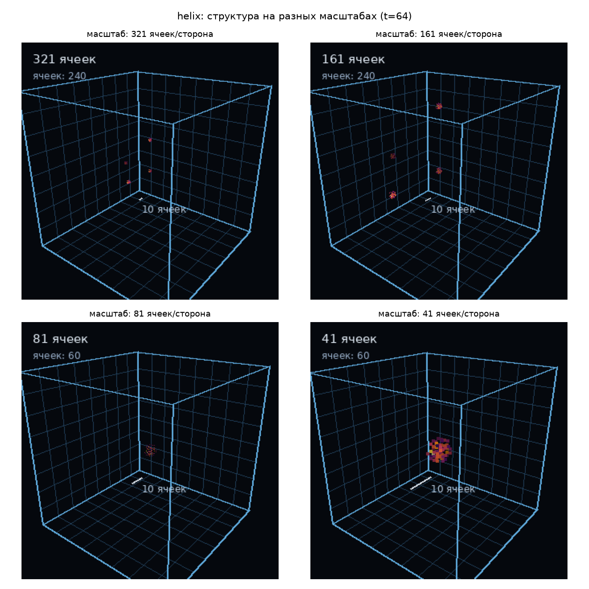
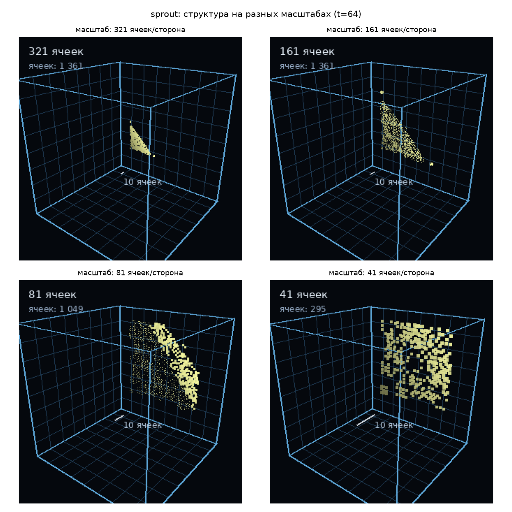
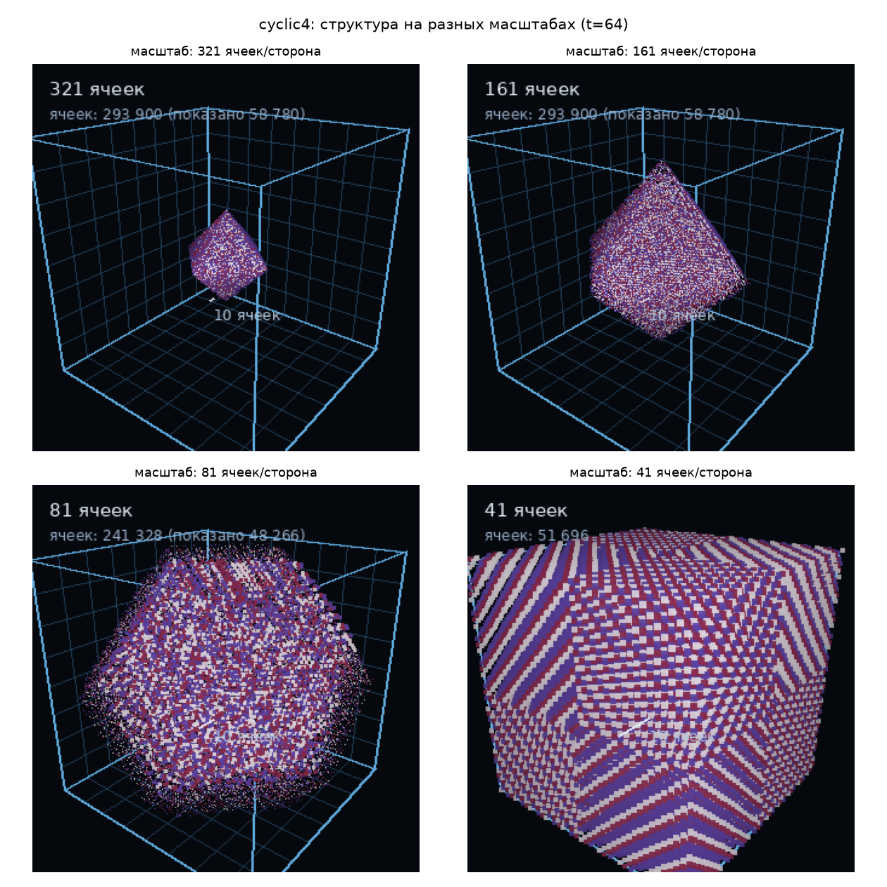
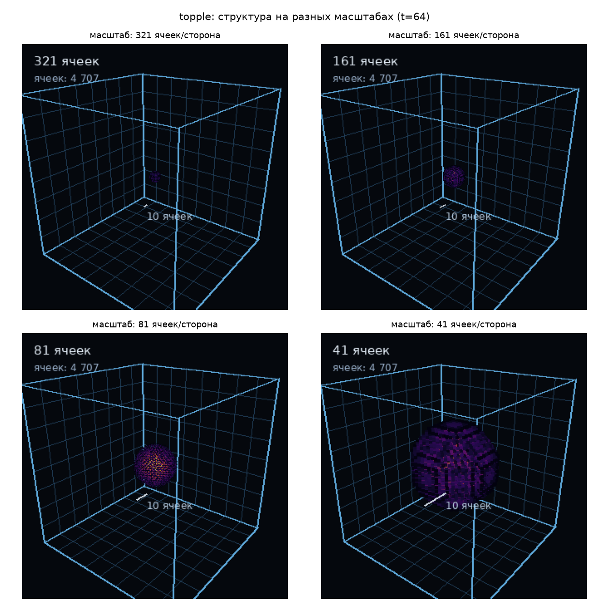
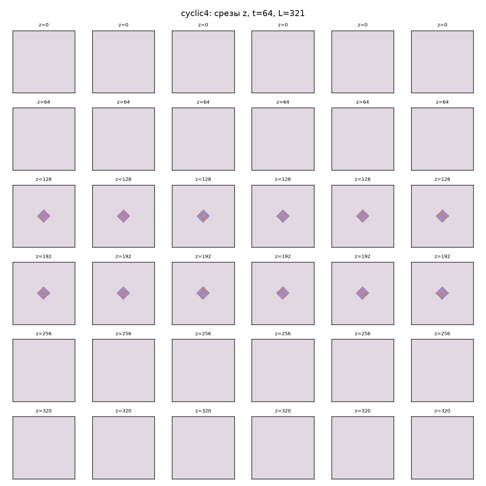
07 Обсуждение
7.1 Внутренние биты важнее счёта соседей
Главный качественный результат: плодородность зародыша определяется не количеством бит, а тем, умеет ли правило их читать. Тоталистическое правило видит только число живых соседей; одна клетка для него — вырожденный вход, и все 729 проверенных правил дают лишь смерть, застывание, оболочку или игницию. Как только правило начинает использовать само слово (поворот, сдвиг, AND), одна клетка становится полноценным зародышем.
Это перекликается с отчётом №2: там для фермиона потребовалась двухкомпонентная структура (спинор), а не скалярное поле; здесь для «частицы-зародыша» нужна внутренняя структура слова, а не счёт соседей. В обоих случаях сложность начинается с внутренних степеней свободы.
7.2 Сохранение против богатства
Три режима образуют явный фронт Парето:
- точное сохранение бит (TOPPLE):
Pпостоянно, но структура — компактная куча с низким разнообразием; - обратимость (TWIN): прошлое восстановимо, структура богаче, но
Pне сохраняется; - рост (SPROUT, HELIX): самые богатые структуры, но информация создаётся — постулат нарушен.
В проверенном срезе нет правила, которое одновременно точно сохраняет биты и даёт богатую иерархию. Это не доказательство невозможности, но сильный эмпирический факт: сохранение — жёсткое ограничение, и оно «съедает» именно те степени свободы, из которых растут структуры.
7.3 Где же частицы?
Ни одно из 720+729 правил не дало устойчивых локализованных «частиц», движущихся по кубу. Структуры, которые мы нашли, — протяжённые: решётки, дендриты, фронты, фазовая турбулентность. Это честный отрицательный результат: в 3D клеточный автомат легко делает «мир», но трудно делает «тело». Для гипотезы это означает, что механизм частицы должен включать защиту от расплывания (солитон, связанное состояние, топологический дефект), которой в нашем языке правил не было.
7.4 Ограничения
- Размеры 65–321 ячейки и 64 такта (открытый режим) или 97 и 160 (закрытый контроль) — это далеко не континуум; выводы о «богатстве» условны.
- Индекс богатства — эвристика; при его изменении порядок в таблице может поменяться.
- Мы перебрали 720 вариантов одной грамматики и 729 контрольных B/S; это не случайная выборка из полного пространства.
- Воксельный рендер и срезы — компромисс: на масштабе 640 пикселей тонкие структуры и отдельные ячейки теряются; «микроскоп» 24³ показывает их ценой потери общего плана.
- Определения «информации» (биты, обратимость, энтропия) не эквивалентны и не дают одного числа «масса».
08 Выводы
- Число правил при фиксированном языке конечно, но чудовищно:
2227 ≈ 1040 403 562для бинарной 27-ячеечной решётки и25625627для B = 8. Симметрия куба даёт два разных ответа: инвариантных правил10858 624, а классов эквивалентности —1040 403 560(факторизация по 48 вращениям экономит лишь 48 раз). Полная классификация поведения не выполнена; систематически разобраны только малые пространства (256 элементарных,218двумерных Life-подобных). - Зародыш 1×1×1 для тоталистических правил не даёт сложных структур: 650 смертей, 25 застывших клеток, 27 оболочек, 27 игниций вакуума из 729. Плодородность требует внутренней структуры слова.
- Собственные правила SPROUT и HELIX могут расти из одной B-битной клетки и дают ветвящиеся и интерференционные структуры; HELIX после замыкания тора образует стоячие решётки.
- Сохранение и богатство конфликтуют: TOPPLE сохраняет все 30 000 бит, но застывает в кучу; TWIN обратим, но не сохраняет
P; ростовые правила богаче всех и нарушают постулат. - Инфляция, идущая быстрее света, наблюдательно неотличима изнутри: закон роста не влияет на локальную динамику, пока фронт не достиг стенки. Влияет момент замыкания — он и создаёт интерференцию. Плотная решётка HELIX в закрытом кубе — артефакт замыкания; в открытом режиме структуры заметно разреженнее, а метрики в таблице считаются по причинному кубу (внутри фронта), а не по всему пустому объёму.
- Причинность соблюдена: фронт не обгоняет
cmax·t; для 26-соседних правилcmax = √3, и это надо учитывать в определении «скорости света». - Частиц нет. Найденные структуры протяжённы; устойчивых локализованных объектов в проверенном срезе не обнаружено. Это главный открытый вопрос для продолжения.
09 Приложение
Файлы и воспроизводимость
src/ca3d.py — решётка, инфляция, правила, самопроверкиsrc/ca3d_metrics.py — энтропия, сжатие, кластеры, box-размерностьsrc/ca3d_render.py — изометрия, cutaway, срезы, кадрыscripts/run_ca3d.py — все прогоны, графики, report.jsonscripts/build_ca3d_report.py — сборка этого HTMLresults/ca3d/report.json — все числа и проверкиПроверки
| Проверка | Статус | Значение |
|---|---|---|
| 2^128 точно посчитано | PASS | 128 |
| Бёрнсайд: 24 вращения | PASS | 24 |
| классификация зародыша: сумма = 729 | PASS | игниция вакуума (B=0)=27, оболочка 26 клеток (B=1)=27, одна застывшая клетка (B≥2, S=0)=25, смерть (остальные)=650 |
| SPROUT растёт из одной B-битной клетки | PASS | 648 |
| HELIX растёт из одной B-битной клетки | PASS | 2048 |
| TOPPLE сохраняет биты | PASS | 30000 |
| TWIN обратим (8 шагов, обратный ход) | PASS | 8 |
| фронт не обгоняет c_max·t | PASS | helix=1.03, sprout=1.02, sprout_or=1.02, topple=0.17, cyclic4=1.02, twin=1.02 |
| инфляция: старт быстрее c | PASS | 5.99 |
| стенка не догоняет свет всю быструю инфляцию | PASS | 39.7 |
| куб вырос до L_max | PASS | 97 |
| быстрые законы дают одинаковое состояние | PASS | exp=2641120804, power=2641120804, linear=2641120804, step=2641120804 |
| медленный закон даёт другое состояние | PASS | 1435892632 |
Проверки выполняются в scripts/run_ca3d.py; таблица генерируется из report.json. PASS означает, что численная проверка прошла на данных этого прогона, а не «так задумано».
Литература
- S. Wolfram. Statistical Mechanics of Cellular Automata // Rev. Mod. Phys. 55, 601 (1983). doi:10.1103/RevModPhys.55.601
- S. Wolfram. A New Kind of Science. Wolfram Media, 2002. wolframscience.com/nks
- C. Bays. Candidates for the Game of Life in Three Dimensions // Complex Systems 1(3), 373–400 (1987). complex-systems.com
- T. Toffoli, N. Margolus. Invertible Cellular Automata: A Review // Physica D 45, 229–253 (1990). doi:10.1016/0167-2789(90)90185-R
- E. Fredkin, T. Toffoli. Conservative Logic // Int. J. Theor. Phys. 21, 219–253 (1982). doi:10.1007/BF01857727
- P. Bak, C. Tang, K. Wiesenfeld. Self-organized criticality // Phys. Rev. Lett. 59, 381 (1987). doi:10.1103/PhysRevLett.59.381
- J. M. Greenberg, S. P. Hastings. Spatial patterns for discrete models of diffusion in excitable media // SIAM J. Appl. Math. 34, 515–523 (1978). doi:10.1137/0134040
- A. H. Guth. Inflationary universe // Phys. Rev. D 23, 347 (1981). doi:10.1103/PhysRevD.23.347
- A. D. Linde. A new inflationary universe scenario // Phys. Lett. B 108, 389 (1982). doi:10.1016/0370-2693(82)91219-9
- K. Zuse. Calculating Space. MIT Technical Translation AZT-70-164-GEMIT, 1970. zib.de
- J. Kari. Reversibility and surjectivity problems of cellular automata // J. Comput. Syst. Sci. 48(1), 149–182 (1994). doi:10.1016/S0022-0000(05)80025-X
- D. Eppstein. Growth and Decay in Life-Like Cellular Automata // Game of Life Cellular Automata, Springer, 71–98 (2010). arXiv:0911.2890
- A. Ilachinski, P. Halpern. Structurally Dynamic Cellular Automata // Complex Systems 1(3), 503–527 (1987). complex-systems.com
- A. Modanese. Complexity-Theoretic Aspects of Expanding Cellular Automata // Natural Computing (2020). doi:10.1007/s11047-020-09814-2
- R. W. Gerling. Classification of three-dimensional cellular automata // Physica A 162(2), 187–195 (1990). doi:10.1016/0378-4371(90)90437-W
Ссылки на литературу — для контекста; все численные результаты получены кодом этого репозитория и не заимствованы.